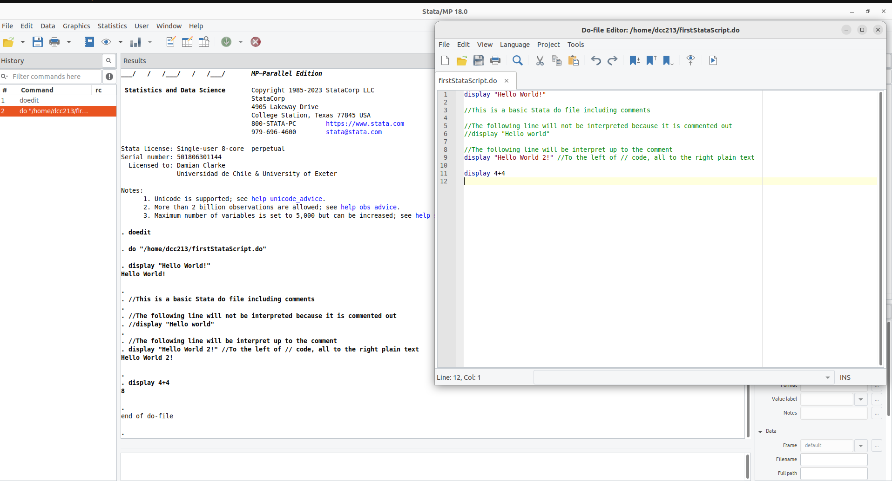
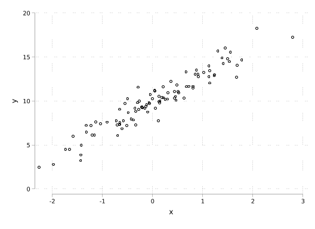
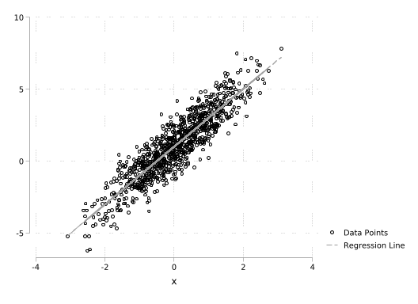
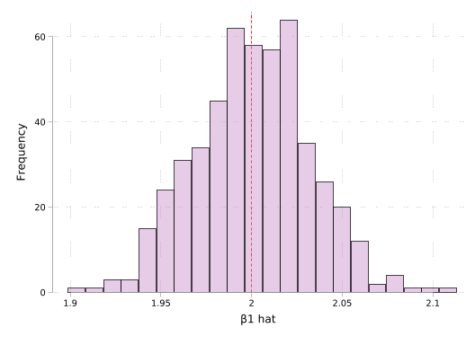

display 4 + 48We will assume that when you are reading this you have access to some version of Stata. Likely, the way you will interact with Stata will be with Stata’s native GUI which provides you with a number of windows including a panel showing the history of commands, an area displaying any variables you have loaded, a place to type commands, a number of emerging windows which we will discuss below, and most importantly, a “shell”, or Stata interface, which looks like the following:
___ ____ ____ ____ ____ ®
/__ / ____/ / ____/ 18.0
___/ / /___/ / /___/ MP—Parallel Edition
Statistics and Data Science Copyright 1985-2023 StataCorp LLC
StataCorp
4905 Lakeway Drive
College Station, Texas 77845 USA
800-STATA-PC https://www.stata.com
979-696-4600 stata@stata.com
Stata license: Single-user 8-core perpetual
Serial number: SERIAL HERE
Licensed to: NAME HERE
INSTUTION HERE
Notes:
1. Unicode is supported; see help unicode_advice.
2. More than 2 billion observations are allowed; see help obs_advice.
3. Maximum number of variables is set to 5,000 but can be increased; see help set_maxvar.
.Stata comes in versions ranging from 1 to 19, with later versions being assigned higher numbers. Later versions of Stata can run any code written in earlier versions of Stata, though at times new commands are introduced, which may be available in more recent versions of Stata, but not in earlier versions. In the below we will generally work in a way which will work with any recent versions of Stata (for example from version 12 onwards, given that versions prior to Stata 12 are not common), though we will note in a few cases where commands may be specific to only certain versions of Stata and later.
If you are in the Stata GUI, Stata code can be entered directly in the command line which is generally located at the bottom of the window. The most simple way to execute code in Stata is to simply input commands at the command like. So, for example, you could write the following in the command line and press enter, and Stata will evaluate this code:
As you can see, Stata has understood the instruction that you want to add 4 plus 4 and show the result, which is evaluated, and output directly in the Stata console above. Later in this chapter we will properly explain these mathematical operations and the different Stata data types. You will note that unlike in certain other languages, here we have not simply input a mathematical operation to be evaluated. This is because Stata requires every interaction to be based on a valid command, which in this case happens to be the display command. So if, for example, we were instead to type:
4 is not a valid command name
r(199);we see that the answer is not returned to us, but rather some message suggesting that we have done something invalid (we will discuss such messages at more length below). Stata has a large range of commands which can be invoked at the command line. We will become familiar with a considerable number of these throughout this introduction. As another very simple example we can type pwd for “print working directory”:
This command show us the path on our computer where Stata is currently working. Thus, any files saved will be exported here, and Stata will search for any thing to import from this directory. If you wish to change this directory you must use the function cd("Path/to/the/directory/you/want/to/use") with the path written between " " in order for Stata understand that is a character, again a topic that will be introduced more deeply later. It is important to note that paths should be separated with the slash character: / rather than the backlash \, as this will work on any operating system. Indeed, if you try to set directories with a backslash, on certain operating systems you will see that Stata returns an error. This may not happen on your operating system, but it is good practice to separate paths by “/” as it ensures code can be run seamlessly on other systems.
We will return to discuss the precise nature of commands in more detail a bit later on. For now you will note that we have simply been typing instructions to Stata directly into the command line, and Stata has been providing us with output. Generally, we will not work this way in an empirical research project, as we will want to develop code over time, and be able to return to Stata and replicate code in the future. For this reason, generally we will work in do files, or files named as something.do (where something will be logical name for the file). We will use these do files to store the commands which we require for particular processes or routines, and can then save them to the disk of our computer before running them in Stata. These scripts can be generated in any type of text editor, and then can be run in Stata using the do command. For example, below, you can see a screenshot of a session on Stata where we have a basic Stata do file named firstStataScript.do which we are editing in Stata’s native do file editor (which can be accessed by typing doedit, and behind this, in the Stata console we see that the script is run using do and output is provided.

You may notice something strange about the code and the output in the Stata console. The Stata do file has 7 distinct lines of text, but the console only executes three lines of code (the lines in Stata which do not begin with a “.”). The reason for this is because we have included comments, or messages for human eyes, but not for the computer to interpret. Any time that // is included in code, Stata understands that this is a comment, and hence is ignored in executing the code. So, for example, when we write:
in our code, the Stata console correctly echoes Hello World! back at us. However, if we enter precisely the same code, but begin the line with a comment symbol, Stata will not do anything given that it interprets everything to the right of // as plain text which should be ignored. Similarly, the “*” symbol used at the beginning of a line also serves to act as a comment character. You will note that on line 9 of the code displayed in the do file editor, we are also perfectly able to use comments within a line in do files, and the line will only be executed up to the point which the comment is reached. It is good practice to comment code extensively, both for sharing code with other users, but also for sharing code with yourself in the future, where you may not remember precisely what you were thinking when you originally wrote your code! As a final note on comments, you can also write comments which span multiple lines if these comments are contained within the characters: /* which opens the commend and */ which closes the comment. You may wish to confirm this yourself by opening a do file and checking that you can write a multi-line comment in this way.
Until now we have executed some code in Stata and seem some specific commands which print output, but we have never stored any results for later use within our code. Generally we will want to store the output of intermediate steps in our code for later use. We will show a number of ways to do this below.
In general, when we work with Stata we will work with variables, which are stored by Stata as a dataset. We can assign the values or characters to variables, provided that we first ensure that Stata has a defined number of observations. For example:
If we already have data in memory, the first line of code set obs 10 will not be necessary, as we will already have a defined number of observations. However in the second line where we generate a variable named x1 and define its value as 1 for each observation, this will be generated for the number of observations in our entire dataset. We will discuss this structure shortly, as well as alternative ways to store information, when we lay out Stata’s data types below.
In the above code we have seen that Stata has used the command generate and then uses the equals symbol to assign a value to the variable generated. If we fail to remember to type generate, or make some other error in our assignation, Stata will inform us about our error by printing out an error message:
command x1 is unrecognized
r(199);These error messages include a brief explanation of what has gone wrong, to help you diagnose and fix your code, as well as an error code (in this case r(199)), which may allow you to find further information related to the error. All error codes can be found in Stata’s manuals. When an error occurs, anything which you have asked of your code will not be performed, and so in this particular case you will not see any variable named x1 in your Stata memory.
The logic of Stata is generally based on the idea that we will have a principal dataset which will allow us to store related variables. This is similar to the idea of data frames in other languages, and makes sense for a lot of our econometric work where we will often wish to store information on N individuals in rows, and K variables in columns. By default, when we generate variables these will be stored in a single dataset which we can browse in Stata. As we have seen above, we can generate this dataset “by hand” by first indicating the number of observations (rows) available, and then simply provide names for any newly added variables. As we will see below, in practice we will generally actually import an existing dataset, and then generate any variables to add to this data. Traditionally, Stata obliges us to work with a single dataset in memory, and so at times we need to think carefully about how to combine datasets if we are working with multiple pieces of information at once. However, as we will see shortly, frmo version 16 of Stata onwards, we are now able to hold multiple datasets in memory simultaneously, potentially making it more simple to work with varying types of information.
To get up and running with Stata, it is useful to understand the different ways which data can be stored. Stata can hold a number of different types of information in the variables we generate, and it is important that Stata understands what type of information we are passing or storing. Among others, Stata allows for variables to hold text (strings) or numeric data types. Text is perhaps the conceptually simplest type of data. Text is simply saved as strings of characters, and should be specified between " ". We have seen the use of characters when displaying “Hello world” previously. If characters are not indicated between strings, Stata will understand that they refer to variable names. For example, returning to Hello World, if we seek to generate a variable which stores this text, if this is entered without quotes, an error will appear:
Hello not found
r(111);Indeed, if we look carefully at the error message we may see that the error has occurred when Stata tried to evaulate Hello. As we did not enclose Hello in double quote, Stata seeks to find some internal information such as a variable or command called Hello. When it is unable to find tis, an error is produced. However, if we had correctly enclosed “Hello World” in double quotes, we would see that this would be stored as a variable, which we are naming mivar:
We can confirm that this variable exists and is effectively understood to be string data by using the describe command. This command describes to us the variable which we request to describe, or if entered with no names, simply describes all the data held in the memory. Below we see that among other things, the storage type of this variable is denoted as str11, a string variable with 11 characters.
Variable Storage Display Value
name type format label Variable label
-------------------------------------------------------------------------------
mivar str11 %11s Numeric data is entered without any special behaviour, simply writing the number in the case of numerica values. Indeed, if numeric data is accidentally enclosed between quotes, it will be treated as character, and not numeric data. For example, below we assign two variables based on the number 2 and confirm that one is numeric while the other is viewed as a character.
Variable Storage Display Value
name type format label Variable label
-------------------------------------------------------------------------------
num1 float %9.0g
num2 str1 %9s If you try to perform numerical operations based on the above variables (more on this below), you will see that num1 can be involved in such calculations, while num2 cannot.
One of the few points we will see here which is Stata version specific is the use of frames. From Stata version 16 and beyond, the ability to work with multiple datasets simultaneously in a single session was introduced. For example, given that we have generated a number of variables in our session, we can see that there is a current data frame named default.
If we would like to start working with multiple frames we may wish to rename this frame for simplicity using frame rename oldname newname
Now we will create a new data frame with frame create name and change to that data frame with cwf name, where cwf refers to “Change working frame”:
Contains data
Observations: 0
Variables: 0
Sorted by: As you can see when we use the describe command, our new frame contains none of the information which we have previously generated in our session. However, if we request that Stata , but if you use
You will see how there is two data frames and the one named my10obs contains our previously generated data. We can now simply use cwf to toggle between data frames should we wish to work in two separate data environments.
Although the most common way to work in Stata will be within a dataset or data frame, Stata provides a number of additional ways to store data including as scalars and matrices. Scalars are objects that store a single value, which can be either a string or a number. For example, we can define scalars as below, noting the use of the scalar command.
This code succesfully store the string Hello World in the scalar named x1 and 8 (as the result of 4 plus 4) in the scalar x2. This scalars can also be used in future operations
You may note that here we have generated a scalar named as x1, and previously we had generated a variable named x1 in our Stata dataset. There is no formal reason why you cannot name scalars in the same way as you name variables, as Stata will view them as different objects. Of course, you likely will wish to avoid the confusion of having variables and scalars named in the same way, and it is good practice to use more descriptive names when generating variables and scalars. However, it is worth noting one difference in working with scalars and variables. If we wish to generate a variable which is already generate, Stata will not allow us to, resulting in an error indicating a variable with this name is already defined. However, if we wish to replace a scalar with a new value, Stata will issue no error, simply destroying the old scalar, and creating a new one. For example, below (noting that the variable x1 and the scalar x1 have previously been defined), we can see this differing behaviour:
variable x1 already defined
r(110);If we do actually wish to save over our variable, we need to explicitly indicate this by using the replace command instead of the generate command.
Finally, we can also work with numerical matrices which can only store numbers and which work in the fashion of standard algebraic matrices, by using the group of matrix commands. To see this, consider the following matrices, which are input using matrix input, and which we name as A and B:
Stata’s matrix notation is to separate columns by commas, and rows with the backslash. We can see the result of this matrix input using the matrix list command
A[2,2]
c1 c2
r1 1 2
r2 3 4
B[2,2]
c1 c2
r1 5 6
r2 7 8This matrices are stored and can then be operated with to conduct permitted matrix operations, as seen below.
C[2,2]
c1 c2
r1 19 22
r2 43 50A list of matrix operations can be found in Stata’s manuals.
The standard mathematical operations in Stata likely work how you would expect. Basic mathematical operations are as follows, with an example of their use below:
| Symbol | Operation |
|---|---|
+ |
Addition |
- |
Subtraction |
* |
Multiplication |
/ |
Division |
^ |
Power |
A few examples
Also when you combine different operators it respects the PEMDAS order, first resolving Parentheses, second solve Exponents, third Multiplication and Division, fourth Addition and Substraction. Both multiplication and division, and addition and substraction are evaluated left to right, rather than sequentially by operation, so it is important to indicate to Stata explicitly what you need using parentheses in certain cases. For example in order to solve \[-\frac{5 + 3^{5-3}}{5\times 3}\] You should use the code
In general, these operations are assumed to refer to variables or scalars. In the case of matrices, addition, substraction multiplication and division are also possible with the same symbols, where multiplication will result in matrix multiplication (and not element-wise multiplication), and division assumes the division of each element of the matrix by a single scalar. Matrix transpose can also be performed simply using '. If, however, you wish to perform more complicated matrix calculations such as element-wise operations, it may be worth using Stata’s own matrix processing language, which is known as Mata. In this introduction we will not explore Mata, however it is worth noting its existence, particularly if you wish to work with demanding numerical tasks.
Certain mathematical operators can also work with strings, specifically + and *. Stata automatically identifies when you use + if you are adding numerical values or concatenating strings, in this case you must use the same data type. When you use * to operate with strings you must specify a string and a number, because Stata will repeat the string as many times as the number indicates:
scalar x1 = "Hello " + "World"
scalar x2 = 2 + 2
scalar x3 = "Hello" * 2
display x1
display x2
display x32
4
HelloHelloStata also has relational and logical operators that returns a numerical value associated with the truth value of an expression (0 for False and 1 for True) pointing if the statement is true or false. This operators are:
| Symbol | Comparison |
|---|---|
== |
Equals |
!= |
Difference |
> |
Greater |
>= |
Greater or Equal |
< |
Less |
<= |
Less or Equal |
| |
Or |
& |
And |
! or ~ |
Negation |
A few examples
display 4 == 3
display 4 != 3
display 4 > 3
display 4 >= 3
display 4 < 3
display 4 <= 3
display (4 == 3) | (4 != 3)
display (4 == 3) & (4 != 3)
display ~(4 == 3)0
1
1
1
0
0
1
0
1We will return to these logical operators below when we discuss the use of conditions in manipulating variables.
##Loops in Python Looping constructs in programming languages provide a mechanism to execute a set of instructions multiple times, contingent upon certain conditions. Stata, a powerful statistical software, offers several looping constructs. Among these, the foreach and while loops are paramount.
foreach LoopIn Stata, the foreach loop is commonly used to iterate over lists or variables.
1.1. Iteration Over Variables
Consider a dataset of student grades:
clear
input str10 student grade
Alice 85
Bob 90
Charlie 78
Diana 92
end
foreach var of varlist grade {
summarize `var', detail
}
grade
-------------------------------------------------------------
Percentiles Smallest
1% 78 78
5% 78 85
10% 78 90 Obs 4
25% 81.5 92 Sum of wgt. 4
50% 87.5 Mean 86.25
Largest Std. dev. 6.238322
75% 91 78
90% 92 85 Variance 38.91667
95% 92 90 Skewness -.5083257
99% 92 92 Kurtosis 1.7389831.2. Iteration Over Lists
For tasks requiring iteration over a series of numbers:
while LoopThe while loop in Stata executes statements as long as a particular condition remains true.
Consider a scenario where we’re approximating the square root of a number using the Babylonian method:
clear
scalar number = 49
scalar guess = number / 2 // Initial guess
scalar difference = 1
scalar tolerance = 0.01
while difference > tolerance {
scalar new_guess = 0.5 * (guess + number / guess)
scalar difference = abs(new_guess - guess)
scalar guess = new_guess
}
display "Approximated square root: " round(guess, .01)Approximated square root: 7The continue command in Stata’s foreach, forvalues, or while loops interrupts the current iteration and omits the rest of the loop’s commands, restarting from the loop’s beginning. However, when paired with the break option, it exits the loop completely and proceeds with the next command outside the loop. This feature allows for flexible control within looping constructs, either to skip an iteration or to terminate the loop based on specific conditions.
3.1. Utilizing continue, break in Odd Numbers and Least Common Multiple (LCM)
clear
// Loop through numbers 1 to 10
forvalues i = 1/10 {
// Display odd numbers and break the loop when the number reaches 7
if mod(`i', 2) == 1 {
display "Odd number: `i'"
if `i' == 7 {
continue, break // Break out of the loop when the number reaches 7
}
}
}
forvalues x = 1/10000 {
if mod(`x',7)==0 & mod(`x',8)==0 & mod(`x',9)==0 {
display "The least common multiple of 7, 8, and 9 is `x'"
continue, break
}
}Odd number: 1
Odd number: 3
Odd number: 5
Odd number: 7
The least common multiple of 7, 8, and 9 is 504In conclusion, loops are indispensable in Stata, facilitating repetitive tasks and complex computations. Mastery of these constructs is essential for academic research, statistical analysis, and data visualization.
Beyond these logical and mathematical operators, Stata comes with a large suite of built in commands which perform specific tasks, as well as additional user-contributed functions (discussed below) which can perform a number of more specialised tasks. “Out of the box” Stata comes with many commands which are all comprehensively documented. A full list can be found in the Stata manuals.
Commands are designed to perform specific tasks, potentially accepting input (known as “arguments”), and returning output which you can interact with. We have already seen a number of functions above such as display, generate, and describe which at times we have used with arguments, and at times we have used without arguments. In order to use commands the highly-standardised Stata syntax is to provide the command’s name, followed by its arguments (variable names, conditionals for a subset of observations and other requirements) and its specific options, which are separated by a comment from the main arguments. These options allow us to further specialise commands by requesting particular optional changes to the default implementation. To understand how a command works, we should consult the help documentation which is available for each command by typing help and the command name. For example, if we wish to understand the describe function, typing help describe will provide us with the following syntax, along with a list of options, further explanation, and so forth.
describe [varlist] [, memory_options]
The syntax is always laid out in this standardised way, where square brackets imply that something is optional. Here if we do not type a specific list of variables (varlist) Stata will describe to us all the variables in memory. We are also optionally able to include options, such as simple, and short, which are laid out below in the help file. You will also note one other thing in the syntax diagram, and that is that the d describe is underlined. Each Stata command will underline the shortest possible way a command can be written by providing this underline, and in this case this implies that even if we just write d Stata will understand that this refers to the describe command. Indeed, we can write command names as this shortest version possible, or any longer version up to and including the full name, so d, de, des and so forth are all understood as describe.
In certain cases if we are not sure exactly what function we need we can type search search_term and Stata will advise us of any functions which may do what we’re after. For example, if we are seeking to summarise our variables, we may type search summary, and we see a range of functions, including one called summary. We can then consult the help file to see if this is precisely what we are after. Reading the help file we see that the command “calculates and displays a variety of univariate summary statistics.”
As in general we will work with data in using our commands, and to see how this summarize command works in practice, we will use an internal dataset which Stata provides for us. This is the auto dataset, a simple dataset often used to explore commands. In the following section we will further discuss ways to load data into Stata, but for now just note that we can load this particular dataset using the sysuse (for “system use”) command, along with the name of the auto dataset:
(1978 automobile data)
Contains data from /usr/local/stata19/ado/base/a/auto.dta
Observations: 74 1978 automobile data
Variables: 12 13 Apr 2024 17:45
(_dta has notes)
-------------------------------------------------------------------------------
Variable Storage Display Value
name type format label Variable label
-------------------------------------------------------------------------------
make str18 %-18s Make and model
price int %8.0gc Price
mpg int %8.0g Mileage (mpg)
rep78 int %8.0g Repair record 1978
headroom float %6.1f Headroom (in.)
trunk int %8.0g Trunk space (cu. ft.)
weight int %8.0gc Weight (lbs.)
length int %8.0g Length (in.)
turn int %8.0g Turn circle (ft.)
displacement int %8.0g Displacement (cu. in.)
gear_ratio float %6.2f Gear ratio
foreign byte %8.0g origin Car origin
-------------------------------------------------------------------------------
Sorted by: foreign
Variable | Obs Mean Std. dev. Min Max
-------------+---------------------------------------------------------
mpg | 74 21.2973 5.785503 12 41Here we can see that when loading this dataset and describing variables, there are number of variables and types, and when we type symmarize mpg (one of the variables) we are provided with summary statistics such as the mean, standard deviation, and so forth.
If we again consult the help file of summarize we may see that there are actually some further details we did not encounter in the help file for describe. In particular, this time the syntax diagram is as follows:
summarize [varlist] [if] [in] [weight] [, options]
As before, we see that the varlist is optional, and so we could type the command without any arguments, in which case Stata will assume that we want descriptive statistics for all variables:
Variable | Obs Mean Std. dev. Min Max
-------------+---------------------------------------------------------
make | 0
price | 74 6165.257 2949.496 3291 15906
mpg | 74 21.2973 5.785503 12 41
rep78 | 69 3.405797 .9899323 1 5
headroom | 74 2.993243 .8459948 1.5 5
-------------+---------------------------------------------------------
trunk | 74 13.75676 4.277404 5 23
weight | 74 3019.459 777.1936 1760 4840
length | 74 187.9324 22.26634 142 233
turn | 74 39.64865 4.399354 31 51
displacement | 74 197.2973 91.83722 79 425
-------------+---------------------------------------------------------
gear_ratio | 74 3.014865 .4562871 2.19 3.89
foreign | 74 .2972973 .4601885 0 1What is new here are the if, in and weight options, which allow us to apply the command to a particular subset of observations, in the case of if you must specify a condition. For example we will summarize the price of those those observations with a mpg greater than its mean
Variable | Obs Mean Std. dev. Min Max
-------------+---------------------------------------------------------
price | 31 4879.968 1344.659 3299 9735As you see the number of observations and other statistics have changed. The use of in is similar, but instead of specifying a condition you must specify the position as row numbers. For example, if for some reason we wished to summarise the price for the first 20 observations we could do so as follows:
Variable | Obs Mean Std. dev. Min Max
-------------+---------------------------------------------------------
price | 20 6359.15 3710.311 3299 15906Also you can see the weight observations if you wish to perform weighted calculations. We will not delve into this point here, but I direct you to the documentation for weight which can be consulted by typing: help weights.
We may also wish to explore certain [, options], which are laid out in the help file below the syntax diagram. As an example in the summarize help documentation you can see that there is a detail option and its description which says “display additional statistics”. So, noting the underlined d in the help file, we can provide more specialised output to the command by invoking this option:
Price
-------------------------------------------------------------
Percentiles Smallest
1% 3291 3291
5% 3748 3299
10% 3895 3667 Obs 74
25% 4195 3748 Sum of wgt. 74
50% 5006.5 Mean 6165.257
Largest Std. dev. 2949.496
75% 6342 13466
90% 11385 13594 Variance 8699526
95% 13466 14500 Skewness 1.653434
99% 15906 15906 Kurtosis 4.819188A final point of note is something which you may have realised when we summarised the entire dataset. While our dataset contains 74 observations (something which we can confirm using the count command), but one variable (rep78) does not provide a summary for 74 observations:
74
Variable | Obs Mean Std. dev. Min Max
-------------+---------------------------------------------------------
price | 74 6165.257 2949.496 3291 15906
rep78 | 69 3.405797 .9899323 1 5The reason for this is because the variable has certain missing observations.
count if mpg==.
count if rep78==.
count if rep78<1000
count if rep78>-1000
count if rep78>-1000 & rep78!=. 0
5
69
74
69In Stata, missing values are recorded as ., and are, by definition, not considered when conducting numerical analyses. In the code above we first confirm that the variable mpg has no missing observations, using the count command, and the if construct discussed above. We then confirm that the missing observations in mpg are indeed recorded as .. In general, Stata makes it relatively easy to work with missing observations, simply omitting these observations from any analyses. However, it is important to note this when conducting analysis. There is one hugely important caveat here, and that is to realise that by construction, Stata views . as an infinitely large value. So, if you consider the examples above, you will note that when we count the observations with \(mpg<1000\), we are correctly told it is 69. However, when we could the number of observations with \(mpg>-1000\), we are told that it is 74, precisely because .is seen as an infinitely large value. For this reason, it will be very careful for us to ensure that we deal carefully with missing values, for example, explicitly accounting for missings, as we do in the last line above.
When we first introduced commands, we noted both that they accept arguments, and that they potentially return objects. Conveniently, the objects which Stata returns are generally provided to use for further processing if desired. Anything return from commands can be found by inspecting the return list, or ereturn list for estimation commands, as follows:
Variable | Obs Mean Std. dev. Min Max
-------------+---------------------------------------------------------
mpg | 74 21.2973 5.785503 12 41
scalars:
r(N) = 74
r(sum_w) = 74
r(mean) = 21.2972972972973
r(Var) = 33.47204738985561
r(sd) = 5.785503209735141
r(min) = 12
r(max) = 41
r(sum) = 1576Here you can see that there is a group of scalars that are automatically generated by Stata once the summarize command is executed, and which correspond to the output of the command. You can freely operate with these scalars
Variable | Obs Mean Std. dev. Min Max
-------------+---------------------------------------------------------
mpg | 74 21.2973 5.785503 12 41
Pearson's Variation Coefficient is: .27165434Similarly, we can incorporate these scalars directly into any variable generation we may wish to proceed with, for example the variable mpg_meandev \[mpg_i - \overline{mpg}\] Where \(\overline{mpg}\) is the mean of mpg variable
Variable | Obs Mean Std. dev. Min Max
-------------+---------------------------------------------------------
mpg | 74 21.2973 5.785503 12 41
+-----------------+
| mpg mpg_mea~v |
|-----------------|
1. | 22 .7027027 |
2. | 17 -4.297297 |
3. | 22 .7027027 |
4. | 20 -1.297297 |
5. | 15 -6.297297 |
+-----------------+As you can see in the list output there is a new variable named mpg_meandev which reports the deviations of each observation from the mean of the mpg variable. Note that is not necessary to use the summarize command each time we want to access the return list values, provide that no other command is used which populates the return list with other values. For example, if we now decide that we would like to generate a standardised version of this variable named mpg_zscore as \[\frac{mpg - \overline{mpg}}{\widehat{\sigma}_{mpg}}\] Where \(\widehat{\sigma}_{mpg}\) is the sample standard deviation of mpg variable, we can do as follows:
While Stata provides a wide array of inbuilt commands, at times we may wish to install extensions written by users which are expected to provide both some specific functionality, as well documentation which can be read as a help file. In Stata, most user-written commands are stored on a central repository known as the Statistical Software Components (SSC). This can be done quite simply using the command ssc install packagename. As an example, in order to install outreg2, a library for formatting regression tables, you can do so with the following code:
checking outreg2 consistency and verifying not already installed...
all files already exist and are up to date.Now that the package is installed you can access the help file by typing help outreg2, and in the future will not need to re-install the package unless you wish to update the package. Once you have installed a user-written command, it will be permanently available to you.
There are other sources such as the Stata Journal or simply a URL, in both cases the command net will provide the tools for search and install packages.
In most – if not all – of our research projects, we will not actually type in data to Stata by hand which is a cumbersome and highly error-prone activity, but rather we will wish to read in data which we have stored on our disk in one or a number of files. Such data may be stored in many formats; among others this may be free formats such as csv or txt, or proprietry formats such as excel or Stata’s own dta files. We have already seen one example of reading in data, which is Stata’s sysuse command, but this is a special case for data that is provided by Stata at installation.
For data which we have stored somewhere on our hard drive in formats such as csv (comma seperated values) or txt formats Stata comes with the import delimited, command. If you consult the help documentation, which is something I would recommend anytime you come across a new function, you will see that the basic usage is relatively standard, as follows:
This will work as is, provided that your csv file is indeed delimited by commas and has variable names on the first line. If, however, your csv does not have variable names, or is delimited by some other character, you may refer to the options in the help file to see how to proceed. Similar such procedures can be followed for other data stored in flat formats such as .txt or others, as laid out in the help file.
This syntax crosses over to excel files too, via the import excel command:
Note that the example is based on a file assumed to end with xls but the same command can be used replacing xls with xlsx if a file is saved as .xlsx. If you further explore the help documentation you will notice that you can specify a variety of arguments that indicates options such as if the row should be used as variable names, the range of cells you wish to import, the sheet name and other such details.
Finally in order to import dta files, which is Stata’s native data format you can simply specify the use command:
If you are working entirely in Stata the value of saving your data in a .dta format is that you will maintain any internal labelling you may be working with, but this may be more complex if you wish to share your data with others who are working in other languages, given that it is a Stata-specific data format.
Once a dataset is loaded in Stata it is immediately avaiable for further processing and use. For a number of examples below we will use another dataset which is provided by Stata upon installation (all such datasets can be seen by typing sysuse dir). This is an abstract of the 1988 US NLSW (National Longitudinal Survey of Mature and Young Women).
Once we have loaded a dataset if we wish we can see a quick snapshot of the data with the list command, for example using list in 1/3 to observe the first three lines:
+----------------------------------------------------------------+
1. | idcode | age | race | married | never_married | grade |
| 1 | 37 | Black | Single | Has been married | 12 |
|----------------------------------------------------------------|
| collgrad | south | smsa | c_city |
| Not college grad | Not south | SMSA | Not central city |
|----------------------------------------------------------------|
| industry | occupation | union | wage | hours |
| Transport/Comm/Utility | Operatives | Union | 11.73913 | 48 |
|----------------------------------------------------------------|
| ttl_exp | tenure |
| 10.33333 | 5.333333 |
+----------------------------------------------------------------+
+----------------------------------------------------------------+
2. | idcode | age | race | married | never_married | grade |
| 2 | 37 | Black | Single | Has been married | 12 |
|----------------------------------------------------------------|
| collgrad | south | smsa | c_city |
| Not college grad | Not south | SMSA | Central city |
|----------------------------------------------------------------|
| industry | occupation | union | wage | hours |
| Manufacturing | Craftsmen | Union | 6.400963 | 40 |
|----------------------------------------------------------------|
| ttl_exp | tenure |
| 13.62179 | 5.25 |
+----------------------------------------------------------------+
+----------------------------------------------------------------+
3. | idcode | age | race | married | never_married | grade |
| 3 | 42 | Black | Single | Never married | 12 |
|----------------------------------------------------------------|
| collgrad | south | smsa | c_city |
| Not college grad | Not south | SMSA | Central city |
|----------------------------------------------------------------|
| industry | occupation | union | wage | hours |
| Manufacturing | Sales | . | 5.016723 | 40 |
|----------------------------------------------------------------|
| ttl_exp | tenure |
| 17.73077 | 1.25 |
+----------------------------------------------------------------+Depending on the way that we are working with Stata, we may also be able to explore the data more interactively using the browse command.
Once we have loaded data in Stata, we will likely want to manipulate the data in a number of ways. This can include relatively simple things like sub-setting to certain columns or rows (which we have already encountered above), but also more complicated things like aggregating data to a higher level, calculating statistics for one or mutliple variable(s) over other variables, joining together a number of datasets, or “reshaping” data in certain ways. Here we will provide a very brief overview of these procedures, and introduce other things as we need them thoughout the book.
To start with some basic data manipulations, we can consider the case where we may wish to convert the data which we have imported into some group-level averages. We can do many such manipulations of this type using Stata’s collapse command. At its most simple level, this command allows us to take some disaggregated data, and “collapse” it to some more aggregated data. For example, imagine we wished convert our data into a single line containing the mean wage over the entire data. We can do this simply with the collapse command:
This aggregation can occur in a much richer way depending on how we wish to aggregate data (ie which type of statistics we desire), and over what variables we would like this aggregation to occur. For example, imagine instead of the mean wage we wished to measure mean wages and the standard deviation of wages over whether an individual graduated from college, and whether they are a member of a union. We can do so as follows, noting that statistics are indicated in parentheses along with other arguments, while the levels which we wish to group over are indicated with the by() option. Once we have generated this collapsed version of the data we will save the data file on disk using the save command for some processes below:
sysuse nlsw88.dta, clear
collapse (mean) mean_wage = wage (sd) sd_wage = wage, by(collgrad union)
list
save groupedNLSW.dta, replace(NLSW, 1988 extract)
+---------------------------------------------------+
| collgrad union mean_w~e sd_wage |
|---------------------------------------------------|
1. | Not college grad Nonunion 6.36869 3.351124 |
2. | Not college grad Union 7.823589 3.849597 |
3. | Not college grad . 7.946638 10.00492 |
4. | College grad Nonunion 10.11737 5.052896 |
5. | College grad Union 10.47342 4.275456 |
|---------------------------------------------------|
6. | College grad . 12.53987 12.33248 |
+---------------------------------------------------+
file groupedNLSW.dta savedGenerically, the syntax of collapse is as follows,
collapse (stat) newname = varname (stat) newname = varname ..., by(groupvariables)
Where the use of ... is to denote that we could add more stats to this collapse.
We will also, at times, wish to join two (or more) pieces of data together, for example “merging” data to match up observations by some particular column or columns. For example, it may be that we have a survey where each individuals surveyed belongs to a household, where all of the individual-level questions in the data are stored as an individual-level file (along with the individual’s household ID), while the household level measures are stored in another file at the household level. If we wish to work with information on the individual and their household characteristics, we will need to “join”, or “merge” the file using the household ID.
Such processes are conducted in Stata using the merge command. As a simple example of this, we could imagine that we would like to take the grouped-level statistics we generated previously and join them back into our original NLSW data.. What we want to do then, is for each individual who has a particular college and union status, join the information on the mean and standard deviation of the wage in this group to their row of data.
(NLSW, 1988 extract)
(label unionlbl already defined)
(label gradlbl already defined)
Result Number of obs
-----------------------------------------
Not matched 0
Matched 2,246 (_merge==3)
-----------------------------------------
Contains data from /usr/local/stata19/ado/base/n/nlsw88.dta
Observations: 2,246 NLSW, 1988 extract
Variables: 20 1 May 2024 22:52
(_dta has notes)
-------------------------------------------------------------------------------
Variable Storage Display Value
name type format label Variable label
-------------------------------------------------------------------------------
idcode int %8.0g NLS ID
age byte %8.0g Age in current year
race byte %8.0g racelbl Race
married byte %8.0g marlbl Married
never_married byte %16.0g nev_mar Never married
grade byte %8.0g Current grade completed
collgrad byte %16.0g gradlbl College graduate
south byte %9.0g southlbl Lives in the south
smsa byte %9.0g smsalbl Lives in SMSA
c_city byte %16.0g ccitylbl Lives in a central city
industry byte %23.0g indlbl Industry
occupation byte %22.0g occlbl Occupation
union byte %8.0g unionlbl Union worker
wage float %9.0g Hourly wage
hours byte %8.0g Usual hours worked
ttl_exp float %9.0g Total work experience (years)
tenure float %9.0g Job tenure (years)
mean_wage float %9.0g (mean) wage
sd_wage float %9.0g (sd) wage
_merge byte %23.0g _merge Matching result from merge
-------------------------------------------------------------------------------
Sorted by:
Note: Dataset has changed since last saved.As we can see here, after completing the merge, we have our original NLSW data, but have additionally added the new columns mean_wage, sd_wage which are our generated variables, along with _merge which summarises the number of units which correctly merge (in this case, all of them). There are three types of merge which we may need to use. These are m:1 (as above), 1:1, or 1:m. These are indicated immediately after invoking the merge command and one of these must be indicated. These values refer to the quantity of observations in the data in Stata’s memory (in this case nlsw88.dta) and the quantity of observations in the data indicated after using (in this case groupedNLSW.dta), over which the merge should be conducted. When an m is indicated this implies that there are many observations in each level, and when a 1 is indicated it implies that there is a single observation in each level. In the above example, given that in the data on the disk there is a single observation for each of the variables collgrad and union, this is indicated as 1, while in the original data, there are multiple women in each group made up of collgrad and union (hence m:1). It is fundamental in merges to ensure that we confirm that either all observations are correctly merged to a partner in the using data, or if not, understand why this is not the case.
For the remaining examples, we will clear all the information from Stata’s memory to manually input a simplified data set to explore a number of tasks. We will do this using the input command, as follows:
+---------------------+
| Zone Year Sales |
|---------------------|
1. | A 2021 100 |
2. | A 2022 115 |
3. | B 2021 98 |
4. | B 2022 106 |
+---------------------+The input command is quite a unique command in that it tells Stata that we will manually write in variable values, and will be assumed to keep going until we type end. Here we have told Stata that we will input three variables manually, and these are named as Zone, Year and Sales. You may also note the addition of str2 before the Zone variable name, which informs Stata that this variable Zone will be inputed as a string, as otherwise Stata assumes that variables will be input manually.
One way to filter variables is to use the keep and drop commands. These commands can either indicate variable names, in which case all indicated variables will either be kept or dropped, or can indicate conditions, in which case all observations complying with the conditions will be kept or dropped. We will illustrate this below, additionally illustrating the use of preserve and restore which allow us to “store” a dataset in a particular moment, and then return to this dataset at a later moment.
As an example first we are going to delete the variable Year with the drop command and next restore to its previous status
Prior to restore
+--------------+
| Zone Sales |
|--------------|
1. | A 100 |
2. | A 115 |
3. | B 98 |
4. | B 106 |
+--------------+
After restore
+---------------------+
| Zone Year Sales |
|---------------------|
1. | A 2021 100 |
2. | A 2022 115 |
3. | B 2021 98 |
4. | B 2022 106 |
+---------------------+As you can see the combination of preserve and restore allows to modify the dataset and go back, while drop remove what we specify, in the example was a variable but also can be observations in specific positions specifying in or depending on a condition specifying if. keep command works opposite to drop, as drop remove only what is specified, keep mantains only the specified and remove everything else. You may wish to confirm that this also works with particular conditions, such as if Sales>100.
Finally the last tool that we introduce for data manipulation is the idea of “reshaping” or transforming data from a wide format to a long format (and vice versa). We refer to data in a long format if for each observation we have multiple rows of data, covering different levels of some other variable. For example, a classic example of this would be a panel of data over countries and years. On the other hand, we refer to data as being in a wide format if for each observation we have multiple columns (or variables) which cover different levels of some other variable. In certain settings we will wish to work with data in one format, and in other settings we may find it more convenient to work with data in another format. Our simplified dataset above is precisely the example of a long format, given that for each Zone we have data over multiple years. In order to transform this dataset to a wide format the code is
Data Long -> Wide
-----------------------------------------------------------------------------
Number of observations 4 -> 2
Number of variables 3 -> 3
j variable (2 values) Year -> (dropped)
xij variables:
Sales -> Sales2021 Sales2022
-----------------------------------------------------------------------------
+----------------------------+
| Zone Sal~2021 Sal~2022 |
|----------------------------|
1. | A 100 115 |
2. | B 98 106 |
+----------------------------+As you can see now the dataset has one observation for each zone and no repeated values for a variable. If we wish to return to the long format we can use the reverse “reshape long” function, where in this case we must provide a name for the variable which will record the levels over which A and B are observed. Namely:
In practice, we will generally use these commands with a considerably larger number of units, but the basic principles are the same regardless.
To end this initial introduction, we will briefly explore the generation of basic plots in Stata. There are a variety of plots that you can create in Stata, and each plot has its own precise syntax. The range of plots which can describe relationships between two (or more) variables can be seen by consulting help twoway and I would encourage to scan the plot types, or explore online to see a graphical overview. In this subsection we are going to show you two basic plots: (i) the line plot and (ii) the scatter plot.
In Stata the command to do generate a line plot is, perhaps unsurprisingly, the line command. This function maps pairs of points in the \((x,y)\) coordinate axis and places them on a graph. For example, let’s consider a case where \(x\) is a sequence of integers between -5 and 5. This can be generated as below:
In this code first we clear the Stata memory, then we set the observations in the dataset to 11, so that Stata understands that there is a dataset, empty for the moment, which has 11 observations (rows). Finally we create a variable named x which will take the value of -6 and the row number (_n) in the dataset. In this way, in row 1, where _n=1, x will equal -5, and will successively increase by one unit down rows:
Next we create \(y = x^2\) as follows:
Now with line function we create the line plot. line, by default generates a line plot of points, making reasonable decisions for axes and labelling:
In the help documentation you can see a series of option that allows to modify the graph aspect.
Now we show you how to graph a scatter plot, for that we are going to simulate with rnormal() 100 pseudo-random numbers from a standard normal distribution in a variable error, then in a variable x we simulate another 100 pseudo-random numbers from a standard normal distribution and finally we create \[y_i = 10 + 3*x_i + error_i\]
Number of observations (_N) was 0, now 100.
If you access help documentation for scatter you can see how add to elements to the graph and further edit the graphs appearance, for example by adding axis titles, adding lines, and so forth.
It is also relatively easy to include multiple graphs, laying these on a single graph window. Graphs can essentially be concatenated together, separating with “||” as follows, where we add a second graph, lfitci which fits a regression line along with 95% confidence intervals:
At times when we are working with more elaborate processes or seek to systematise some procedure which we will wish to apply generically with multiple distinct inputs (or apply more generally in the future), we may wish to write our own programs. While a full discussion of programming in Stata can be found in multiple places such as XXX and that Stata Manuals, we will discuss some key elements of this now. During certain call-outs we will see that we can gain from writing simple programs, and so we will apply these tools during the book.
User-written programs in Stata let you package steps into a single command. Programs can parse inputs, perform calculations, and return results (scalars, macros, or matrices) that you can reuse.
A minimal Stata program has a name and a body. By indicating a class of program (here rclass), elements are returned for post-program access in “return lists” accessible in r(). We could similarly call a program an eclass program, which is used for estimation commands, and access returned elements in e(). Below we write a simple program which adds to numbers:
cap program drop addnumbers
program define addnumbers, rclass
// Parse two required numeric options a() and b()
syntax , a(real) b(real)
// Do the work using locals (local = temporary variable)
local sum = `a' + `b'
// Return a scalar so the result can be reused
return scalar sum = `sum'
// Also display for convenience
dis as txt "sum = " as res %9.2f `sum'
end
// Call it:
addnumbers , a(10) b(5)
// Use the returned value:
return list
sum = 15.00
scalars:
r(sum) = 15Stata typically uses options to pass inputs. Above, we allowed two arguments as a() and b(), and these are used internally in the program to refer to the input. We then see that when we actually run the program (addnumbers, a(10) b(5)), the program returns to us output in which the arguments are set to the specified values. Optional arguments can be handled by setting default values which will be applied unless they are overruled by users. Such optional arguments are indicated by using square brackets, as below:
cap program drop multiplynumbers
program define multiplynumbers, rclass
// a() required, b() optional
syntax , a(real) [b(real 2)]
// conduct calculation of interest
local product = `a'*`b'
// return for post-estimation
return scalar product = `product'
di as txt "product = " as res %9.2f `product'
end
// With default b = 2
multiplynumbers , a(10)
// With explicit b
multiplynumbers , a(10) b(3)
product = 20.00
product = 30.00In the first case above we see that our program simply applies the default value for b(), while in the second when we explicitly overruled this argument, it does not.
It is important to understand what programs are doing, what occurs only inside programs, and what may affect that Stata session outside of a particular program. Relevant things to know in this regard are that locals (local x = ...) live only inside the program. Similary, we can use temporary variables or other temporary objects to generate things locally within our programs which will no longer exist once the project finishes execution.
Of course as we see above, this does not mean that we cannot pass objects (even temporary objects) back to our session. We can use use return to expose results (for rclass), then access them with r(). If you need estimation-style results, write an eclass program and use ereturn. However note that if we make changes to data itself we hold in memory, these will be permanently made to the data, even once the program has finished. We can explore these ideas below.
clear all
set obs 10
gen x = 2
sum x
//clear program if it already exists
cap program drop demo_scope
//Define program
program define demo_scope, rclass
tempname hold
scalar `hold' = 42 // temporary scalar; name auto-unique
local msg "hello"
// edit variable in data
replace x = 3
// Return both a scalar and a local as text
return scalar answer = `hold'
return local greeting "`msg'"
end
// Run the program
demo_scope
return list
di "greeting was: " r(greeting)
di "answer was: " %9.0f r(answer)
// Check if locals and scalars have passed outside of program
dis `hold'
dis "`msg'"
// Check if data is changed
sum xNumber of observations (_N) was 0, now 10.
Variable | Obs Mean Std. dev. Min Max
-------------+---------------------------------------------------------
x | 10 2 0 2 2
(10 real changes made)
scalars:
r(answer) = 42
macros:
r(greeting) : "hello"
greeting was: hello
answer was: 42
Variable | Obs Mean Std. dev. Min Max
-------------+---------------------------------------------------------
x | 10 3 0 3 3You may note that this program demo_scope is actually quite simple in that it does not accept arguments, and hence we use the program simply by typing the program’s name. What is more important to see is that everything which we have defined locally (ie temporary objects such as temporary variables and locals), exists only locally within the program, while any changes to data do live on. For this reason, if we actually want access to local elements, we need to return them explicitly and access them from return lists. And conversely, if we wish to make changes to data but do so only temporarily, we may wish to explore the use of elements such as preserve and restore.
Under construction: relevant for questions
To start with, let’s have a look at some simple simulations, like those referred to in the end of chapter questions. Let’s begin by considering the data generating process (DGP) which we wish to simulate:
\(y_i = \beta_0 + \beta_1 x_i + \varepsilon_i\)
Having a DGP defined, all we need to do is define how any variables area distributed, as well as any necessary scalar values. In this case, let’s set \(\beta_0=1\) and \(\beta_1=2\). And let’s define both \(x_i\) and \(\varepsilon_i\) as being distributed \(\mathcal{N}(0,1)\). We will simulate these separately implying that they are independent, though we could simulate them as coming from a bivariate normal if we wanted to generate correlations between the variables. Our interest in the below demonstration will be to conduct a simulation, and then implement a regression model to estimate \(\widehat\beta_1\) by OLS. In the book, you will be asked to consider examples which are more appropriate for the treatment effects framework which we are considering.
clear all
set seed 1213
set obs 1000
gen x = rnormal()
gen epsilon = rnormal()
gen y = 1 + 2*x + epsilon
reg y x
predict yhat
scatter y x || line yhat x, legend(label(1 "Data Points") label(2 "Regression Line"))Number of observations (_N) was 0, now 1,000.
Source | SS df MS Number of obs = 1,000
-------------+---------------------------------- F(1, 998) = 4367.26
Model | 4055.21601 1 4055.21601 Prob > F = 0.0000
Residual | 926.693078 998 .928550178 R-squared = 0.8140
-------------+---------------------------------- Adj R-squared = 0.8138
Total | 4981.90909 999 4.98689599 Root MSE = .96361
------------------------------------------------------------------------------
y | Coefficient Std. err. t P>|t| [95% conf. interval]
-------------+----------------------------------------------------------------
x | 2.008796 .0303971 66.09 0.000 1.949147 2.068446
_cons | 1.0104 .0304954 33.13 0.000 .9505573 1.070242
------------------------------------------------------------------------------
(option xb assumed; fitted values)
Finally, we will do this 500 times, to see what the distribution of estimated parameters \(\widehat\beta_1\) looks like:
*! fig-cap: Regression estimates in 500 simulations
clear all
set seed 1213
set obs 1000
// Create variable beta1hat to store estimates
gen beta1hat = .
// Generate variables for DGP
gen y = .
gen x = .
gen epsilon = .
forvalues i = 1/500 {
quietly {
replace x = rnormal()
replace epsilon = rnormal()
replace y = 1 + 2*x + epsilon
reg y x
replace beta1hat = _b[x] in `i'
}
}
sum beta1hat
histogram beta1hat, frequency xline(2, lcolor(red)) ///
xtitle("{&beta}1 hat") ytitle("Frequency") lcolor(black) fcolor(purple%40)Number of observations (_N) was 0, now 1,000.
(1,000 missing values generated)
(1,000 missing values generated)
(1,000 missing values generated)
(1,000 missing values generated)
Variable | Obs Mean Std. dev. Min Max
-------------+---------------------------------------------------------
beta1hat | 500 2.001018 .0321036 1.898776 2.113259
(bin=22, start=1.8987763, width=.00974922)
We will take forward many of the examples laid out on this page in the chapters ahead. For now, this introductory session aims to provide you with a sufficient overview to get up and running in Stata, and apply your knowledge to microeconometric methods introduced in the book.